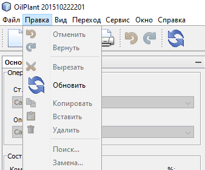

Описание меню "Правка"
Меню "Правка" предназначена для выполнения операций с буфером обмена.
Соответствующие команды доступны также и в панели инструментов
Внешний вид меню "Правка" представлен ниже:

При помощи меню "Правка" можно осуществлять следующие операции с буфером обмена:
- "Вырезать" - вырезает выделенный фрагмент текста в буфер обмена
- "Копировать" - копирует выделенный фрагмент текста в буфер обмена
- "Вставить" - вставляет текст из бефера обмена в указанное место
- "Удалить" - удаляет выделенный фрагмент текста
Также при помощи меню "Правка" можно осуществлять операции управления действиями пользователя, а именно:
- "Отменить" - отменяет последнее действие редактирования пользователя. При многократном выборе отмены отменяет то количество действий,
сколько раз пользователь выбрал операцию "Отменть"
- "Вернуть" - возвращает отмененное пользователем действие. При многократном выборе возврата возвращает то количество действий,
сколько раз пользователь выбрал операцию "Вернуть"
Операция "Обновить акт" подробно расписана в соответсвующем разделе Обновить акт.